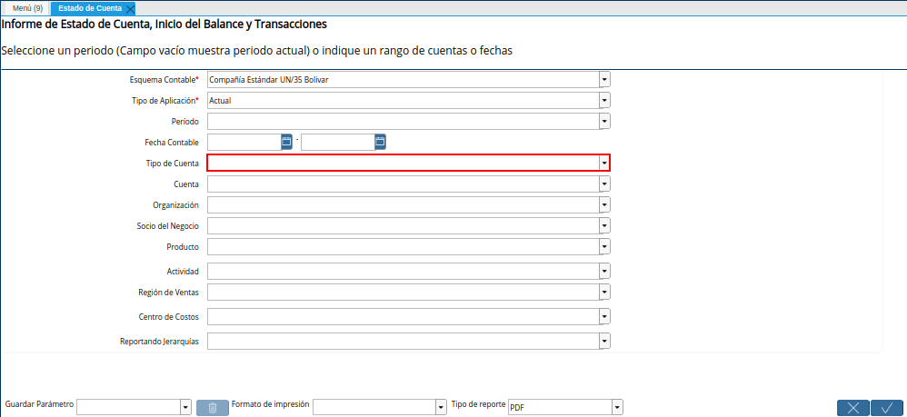
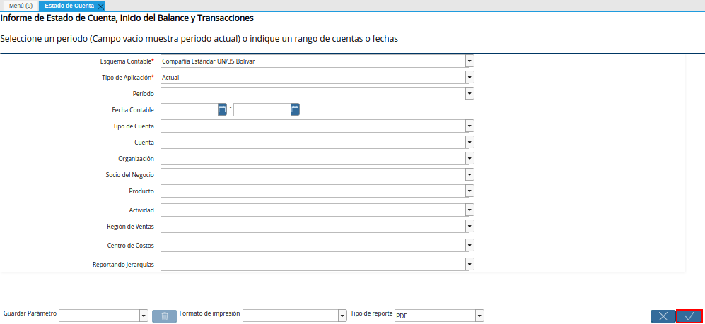

Estado de Cuenta¶
Para generar un estado de cuenta el usuario debe ubicarse en el menú de ADempiere. Debe seleccionar la carpeta “Análisis de Desempeño”, luego debe seleccionar la carpeta “Informes Financieros” y por último el reporte “Estado de Cuenta”.
Imagen 1. Menú de ADempiere

Podrá visualizar la ventana del reporte “Estado de Cuenta”, con diferentes campos que le permiten al usuario en base a lo seleccionado, generar el reporte según lo requerido por el mismo.
Imagen 2. Ventana Estado de Cuenta
Note
Un reporte de estado de cuenta permite generar un informe detallado de las transacciones de una empresa, el mismo puede ser generado en base a las restricciones que sean seleccionadas en los diferentes campos que contiene la ventana “Estado de Cuenta”.
Seleccione en el campo “Esquema Contable”, el esquema contable previamente definido para contabilizar las cuentas.
Imagen 3. Campo Esquema Contable de la Ventana Estado de Cuenta
Seleccione en el campo Tipo de Aplicación, el tipo de aplicación por el cual requiere filtrar la información.
Imagen 4. Campo Tipo de Aplicación de la Ventana Estado de Cuenta
Seleccione en el campo “Período”, el rango de tiempo para filtrar la búsqueda de la información.
Imagen 5. Campo Período de la Ventana Estado de Cuenta
Seleccione en el campo “Fecha Contable”, el rango de tiempo en el cual fueron realizadas las transacciones y de las cuales requiere el reporte.
Imagen 6. Campo Fecha Contable de la Ventana Estado de Cuenta
Seleccione en el campo “Tipo de Cuenta”, el tipo de cuenta para filtrar la búsqueda de la información.

Imagen 7. Campo Tipo de Cuenta de la Ventana Estado de Cuenta
Seleccione en el campo “Cuenta”, la cuenta de la cual requiere el reporte.
Imagen 8. Campo Cuenta de la Ventana Estado de Cuenta
Seleccione en el campo Organización, la organización para la cual esta generando el reporte de estado de cuenta.
Imagen 9. Campo Organización de la Ventana Estado de Cuenta
Seleccione en el campo “Socio del Negocio”, el socio del negocio por el cual requiere filtrar la información.
Imagen 10. Campo Socio del Negocio de la Ventana Estado de Cuenta
Seleccione en el campo “Producto”, el producto por el cual requiere filtrar la información.
Imagen 11. Campo Producto de la Ventana Estado de Cuenta
Seleccione en el campo “Actividad”, la actividad por la cual requiere filtrar la información.
Imagen 12. Campo Actividad de la Ventana Estado de Cuenta
Seleccione en el campo Región de Ventas, la región de ventas por la cual requiere filtrar la información.
Imagen 13. Campo Región de Ventas de la Ventana Estado de Cuenta
Seleccione en el campo Centro de Costos, el centro de costos por la cual requiere filtrar la información.
Imagen 14. Campo Centro de Costos de la Ventana Estado de Cuenta
Seleccione en el campo Reportando Jerarquías, la erarquía por la cual requiere filtrar la información.
Imagen 15. Campo Reportando Jerarquías de la Ventana Estado de Cuenta
Seleccione la opción “OK” para generar el reporte de estado de cuenta.

Imagen 16. Opción OK de la ventana Estado de Cuenta


Podrá visualizar el reporte “Estado de Cuenta” de la siguiente manera.
Imagen 17. Reporte Estado de Cuenta